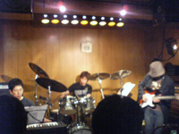

#「EARTHDAY LOVE & MUSIC DAY 2005」というイベント。正直ムーンライダーズ+カーネーション+KILLING TIMEってのはビミョーな組み合わせとは思ったのですけど、KILLING TIME出るのでどーしても。
KILLNIG TIME
#ターコイズ（だっけな？）からブンガワンまでは小川美潮さん参加。日没の前にもう一曲くらいやったような気もするけど、たぶん気のせいかな。
最初はなんか演奏かためかなーとか思ったんですけど、清水さんが遊び始めたころからいつものノリになってきました。
「かたたたき」まで演奏して、ゲストの小川美潮さんの登場「ターコイズ」は清水さんの書いた美潮さんの曲だそうす、EPICから出てた美潮さんのソロに入っててもおかしくないよーな曲。SALONでの美潮さんのボーカリゼーションとか特に良かった。あ、ブンガワンソロは初めて聴きました。
最後に「日没」（凄く良くて泣きそーになった）やっておしまい。短い、正直もっと見たかった。
- PERU
- 8687
- かたたたき
- ターコイズ
- SALON
- ブンガワン・ソロ
- 日没
- 板倉文 (guitars)
- 清水一登 (piano,xylophone)
- Ma*To (tabla,synthesizer)
- 斉藤ネコ (violin)
- Mecken (bass)
- Whacho (percussions)
- 小川美潮 (vocals on 4.5.6.)
CARNATION
#カーネーションは昔の音源を少し聴いたことが有るだけでした、良質のポップバンドだなーと思ってたんで１曲目の轟音にまずビックリ。
っていうかこの日のPAが結構凄い事になっていて、とにかくバスドラの音がデカイ。CDラジカセとかのスーパーブースト（みたいなのあったよね昔）をフルにしたような音。後ろの方に移動しようかと思ったんですけど、ど真ん中の席に座っていたため（左右見たらどうもカーネーションファンみたいだったし）それも適わず。
終わる頃には死んだアザラシみたいな状態に・・・別に悪いバンドではないとは思うんですけど。ごめんなさい。
- 直枝政広 (guitars,vocals)
- 太田譲 (bass)
- 矢部浩志 (drums)
MOON RIDERS
#で、トリが長年苦手にしてるムーンライダーズ。周辺人脈は結構好きで、何がダメなのと聴かれても答えにくいのですけど、どーしてもあまり好きになれなくて。ナマで聴いたこの日も残念ながらその印象は覆りませんでした。途中でやったアラブっぽい音階の曲（というか武川さんのバイオリンは好きみたい）は結構好きなかんじでしたけど。
そんな感じで終了後ちょっとのみに言った後、物凄く久々にカラオケに行きました。やっぱカーネーションいいじゃんって事をそのカラオケで知った。
#毎度お世話になってるNHK-FMライブビートの公開収録。今回はNATSUMENと髭ってバンド、髭はえーとよくわかんないのでパス。
転換時にタバコ吸おうと思ったら、喫煙所が無くなってる・・・NHK全面禁煙の模様。
んでNATSUMEN、今回はキーボードが生ピアノでした。引きのパートでは良いのですけど、やっぱり全員でガーとかやってる時にはちょっと聴きづらい・・・放送では改善されてるのかな？
セットリストはたぶん↓みたいな感じかな、今日もやっぱりSeptemujinaが格好イイ、なんか聴くたび好きになってくるな。そしてラジオの収録だというのにやっぱりA.S.Eは最後の曲で暴れまくり、そのうち流血事件にならなければイイのだがとか思う（そいえば昔見たときギター破壊してたな）。Natsu No Mujinaの前にもう一曲あったかも。わかんなかったけど。
(http://natsumen.net/)
- Whole Lotta Summer
- Sonata of The Summer
- Pills To Kill Ma August
- Septemujina
- Surf The End
- Natsu No Mujina
- A.S.E (guitars)
- アイン (guitars)
- マシタ (drums)
- 蔦谷好位置 (piano)
- 加藤雄一郎 (alto sax)
- 稲田貴貞 (tenor sax)
- 柿沢健司 (cornet)

#こちらも最近物凄く気に入っているバンド、FLAT122のライヴです。実は前日に自分の参加するイベントの為にちょっと練習を拝見したりとかしてて・・・えらくパワフルになったなぁとか思ってて。
前回見たのはドラムの田辺さんが加入して１回目で、その時はあの難しそーな曲を譜面見ながらキッチリ叩いてるなーとか思ってて。今回はもー叩きすぎじゃないのかと思うくらい叩いてました。
曲の最初とかはちょっとハラハラする部分も有ったのですけど、Neo Classic Danceとか辺りから凄い良くなって、メマイの後半とかは背筋がゾクゾクするよーな感じでした。あ、Spiralは途中に別の曲挟み込んでたよーな（チラシに書いてあったWinter Songかな？）
コレ書きながら思ったのですけど、同じベースレストリオでもる*しろうともオパビニアとも全然印象が違うんですよね（まぁオパビニアとる*しろうも全然違うけど）FLAT122は曲が物凄く複雑に構成されている印象で、途中にフリーの部分も有るのかもしれなけれどソレも含めて作曲されてるように聴こえます。それでも結構印象的なフレーズが残ると思うんだけどなぁ。
(http://www.geocities.jp/flat122/)
- パノラマ
- 波涛
- Neo Classic Dance
- メマイ
- Spiral
- 川崎隆男 (piano)
- 平田聡 (guitars)
- 田辺清貴 (drums)
あ、その次のバンド見たのだけどドラムの可愛い女の子が1拍3拍だけをハイハットとスネアだけでずーっと叩き続けるっていう力技で（力入ってなかったけど）いつパターンを変えるのかとハラハラドキドキしながら見てました。アレわざとだったら面白いんだけど、そんな事は無いんだろうなー。